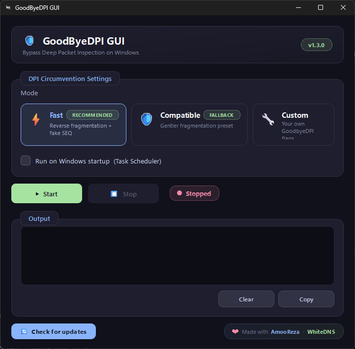

A clean, powerful graphical interface for GoodbyeDPI on Windows. No terminal. No config files. Just click and browse.

The entire interface — modern, dark, and simple.
Built for people who just want their internet back — with power-user tools when you need them.
Pick Fast, Compatible, or Custom visually. No dropdowns, no cryptic flags.
Toggle DPI circumvention instantly with a single click. Live status indicator included.
Friendly, dismissible in-app alerts. No more intrusive OS popups.
Built-in reference for every GoodbyeDPI flag — with one-click add and live search.
Catches typos, missing values, and conflicting flags before you start.
Runs quietly in the background. Start, Stop, or Exit from the tray anytime.
See exactly how long your session has been active. A small but satisfying detail.
Knows when a new version is out — with a direct download link.
Catppuccin-inspired theme with animated accents and a native dark title bar.
No installation. No dependencies. Just download, run, and browse.
Grab the latest portable build from GitHub Releases. Single file, ~50 MB.
Double-click and accept the UAC prompt. Required to modify network packets.
Choose Fast (recommended), Compatible, or Custom. One click.
Visit any blocked site. It just works. Stop anytime with one click.
Lighter than a VPN. More user-friendly than the raw CLI.
| GoodByeDPI GUI | GoodbyeDPI CLI | VPN | |
|---|---|---|---|
| Graphical interface | ✓ Yes | ✕ No | ✓ Yes |
| Speed impact | ✓ None | ✓ None | ✕ 10–40% slower |
| Hides your IP | ✕ No | ✕ No | ✓ Yes |
| Bypasses DPI | ✓ Yes | ✓ Yes | ✓ Yes |
| Requires servers | ✓ No | ✓ No | ✕ Yes |
| Free | ✓ Yes | ✓ Yes | ✕ Usually paid |
| Setup time | ✓ 30 sec | ✕ Read docs | ✕ Sign-up + install |
No. GoodbyeDPI only modifies the very first packet of each TLS connection. Your download speed, upload speed, and ping are unaffected.
No. Games primarily use UDP, which GoodbyeDPI doesn't touch. Even TCP-based games see no measurable impact.
No — that's a VPN's job. Your ISP still sees your IP; they just can't filter your traffic by content anymore.
Yes. MIT-licensed, permanently free, no telemetry, no analytics, no accounts. The only network call is the update check to GitHub.
No. Only Windows 10 and 11 (64-bit) are supported. Older versions lack required APIs.
Technically yes, but usually unnecessary. If the VPN already bypasses filtering, stop GoodByeDPI to save resources — they can conflict otherwise.
Download GoodByeDPI GUI — free, open source, and built for Windows.